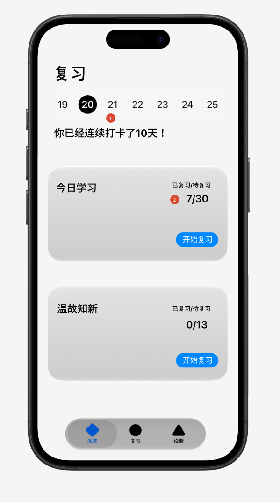
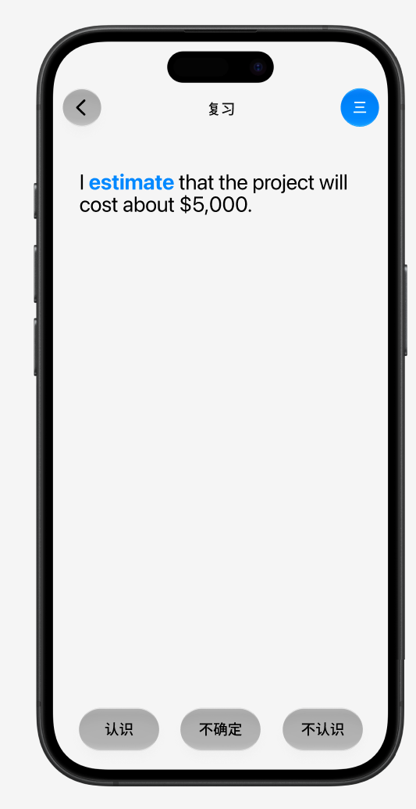
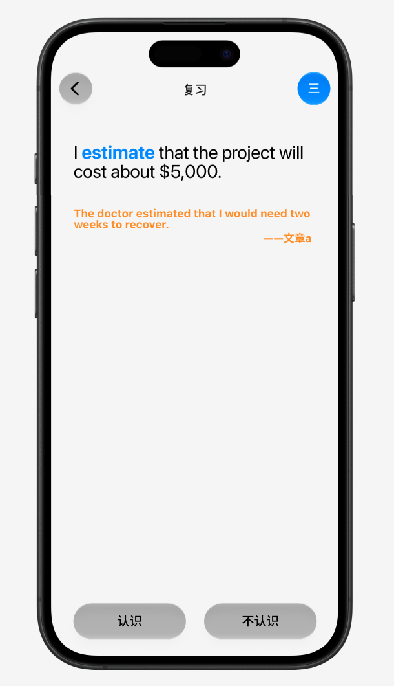
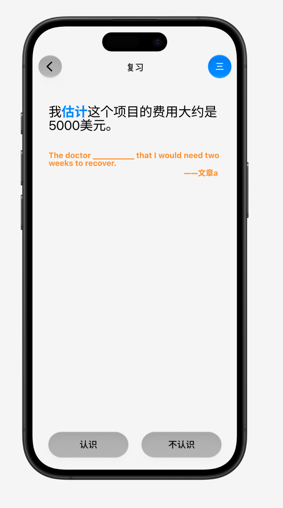
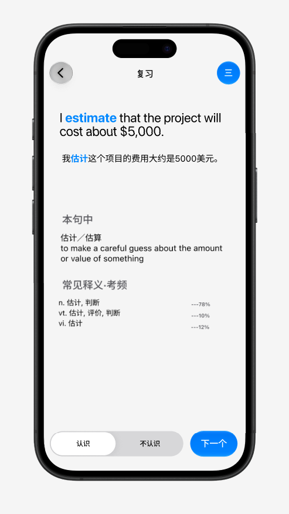
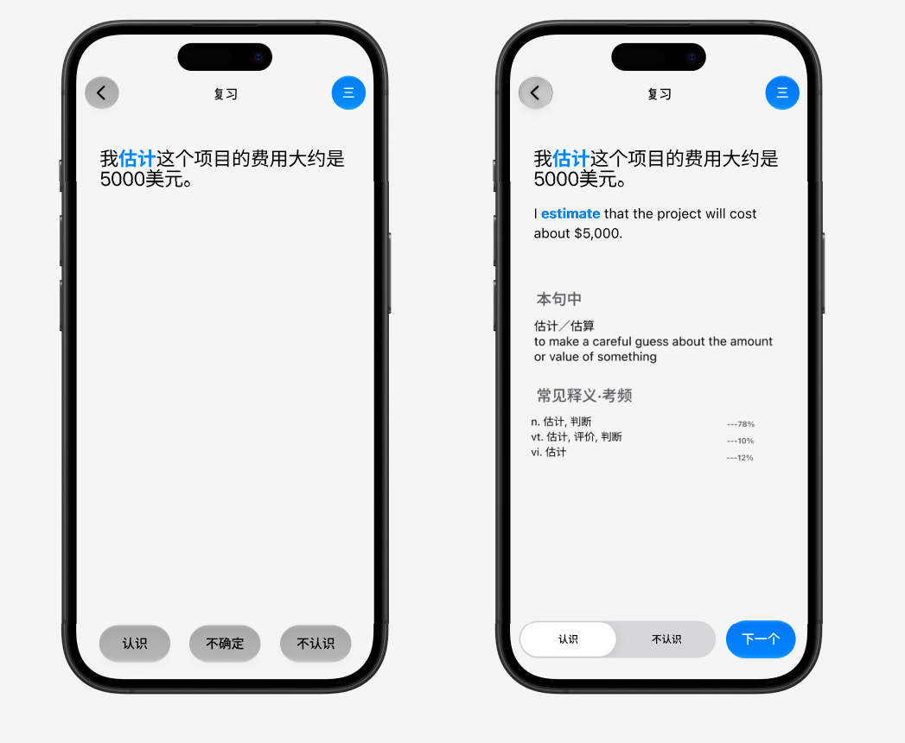

把复习那几屏搬到手机上。规则一条都不用新定——Core 里全实现过、也测过了， 这个 Phase 画的是它们的样子。
所以这份文档的性质和 P6 那份不一样：P6 是「界面怎么呈现内核已有的语义」， 这一份大半是验证已有的规则能不能照着画。结果是两条 P3 的决定被推翻了， 一条 P3 故意留着的口子被选定了，还查出 Core 里一处提前泄题的提示—— 这三样都是画草图画出来的，不是读代码读出来的。
功能设计 English Reader ｜ 上一阶段 Phase 6
P6 要在界面上现定一堆东西；P7 的规则全是现成的，要定的只有画法。
复习的规则在 P3 定完、P5 实现进 Core 并用服务端导出的向量校验过： 加权抽题、双向与解锁、答错退回第一向、权重衰减、当天完成判定、拼写去重。 这个 Phase 一条学习逻辑都不新增。
打卡日历 + 两张卡片，分别是两个池子的入口。

review_queue.bucket
的取值就是 today（今天刚标的）和 due（到期该复习的），
分桶零后端改动。
| # | 状态 | 决定 |
|---|---|---|
| 1 | 已定 | 两张卡，两个入口：「今日学习」＝ today 桶，「温故知新」＝ due 桶。各自能单独进入。 |
| 2 | 已定 | 卡片上写「已复习/共」，数字形如 7/30。标签不写「已复习/待复习」——那样 30 该是 23，两种读法差得远。 |
| 3 | 已定 | 某张卡做完之后，「开始复习」变成绿色的「已完成」。 |
| 4 | 已定 | 七天日历。绿＝两项都完成；灰＝只完成一项，或那天两项都是空的；红＝有活但一项都没做完；未来的日子不上色。 |
| 5 | 已定 | 日历按模拟时钟走，不按真实时钟。开发期要靠 offset_days 跳天测调度，日历不跟着跳的话，测的时候看到的东西是错的。 |
| 6 | 已定 | 显示连续打卡天数。服务端算（架构铁律 1），客户端不数。 |
| 7 | 已定 | 中途可以退出，进度留着。卡片上那个 7/30 正是为这件事存在的。 |
要注意的一处口径：「今日学习」这张卡上的数不等于你今天标记的词数。 见 §3——今天标成「模糊」的词，按 P3 的规则当天不进。这条正在被推翻，但推翻它有代价。
P3 决定 18：「『不认识』当天就复习一次；『模糊』当天不复习，第二天开始，第二天记住了就多隔几天。」
代码里这条写在 session.collect()，注释说的理由是
「你刚读过它，当然还记得」——当天考它没有信息量：几分钟前你才在文章里读到它、
还点开看了释义，这时候答对是必然的。
2026-09-13 定：模糊的当天也进。理由是界面上的一致—— 你今天标了 5 个词，卡片上只显示 3 个，而且没有任何东西解释为什么。
题面是一句你没读过的英文句子，目标词在里面，不挖空。

这屏跟 Core 里 HintLadder.prompt(.wordToSense) 现成的行为一致——
题面就是 asked.text。句子不一定是生成的：P3 的规则是
「你当初读到它的那句留着当提示，考你用一句你没见过的」，
所以题面那句通常是生成的，但那是分配规则的结果，不是设计目标。现有池子
366 条：193 条来自你真读过的文章，173 条生成。
| # | 状态 | 决定 |
|---|---|---|
| 8 | 已定 | 题面＝整句，目标词蓝色加粗、不挖空。 |
| 9 | 已定 | 三个按钮：认识 / 不确定 / 不认识。「不确定」的作用是展开提示。 |
| 10 | 已定 | 暂时不做「太简单」那一档。服务端支持 easy（只在一次没错时生效，对应 FSRS 的 Easy 评级），界面上先不给入口。代价：FSRS 永远拿不到 Easy，一眼就会的词间隔增长偏慢，会比该来的频率更常出现。 |

| # | 状态 | 决定 |
|---|---|---|
| 16 | 已定 | 「不确定」＝提示，点一下就到底，没有第二级。点完按钮从三个变成两个（认识 / 不认识）。方向 1 的提示＝当初读到它的那句 + 出处。 |
| 17 | 已定 | 方向 2 的提示＝挖空的原句 + 出处 + 首字母，三样挤在同一层，点一下「不确定」一起出来。原句要挖空——这个方向问的就是「哪个英文词」，不挖空等于直接给答案。 |
| 18 | 已定 | 提示池空了的兜底：方向 1 → 另抽一句题面池里的句子（不带出处），一句都没有就不显示「不确定」；方向 2 → 至少还有首字母，永远给得出提示。不会出现「点了不确定什么也没有」。（§8 那条改完之后，这种情况基本不会发生。） |
| 19 | 已定 | 橙色的提示内容点得动、点了跳回原文——但这个 Phase 不做。要更优雅的跳转方式和 UI，往后放。 |

The doctor ＿＿＿ that I would need two weeks to recover.
填 reckoned / figured / calculated / estimated 都通顺，
而中文题面的「估计」同样对得上这一串。
光给语境，你会想出一个讲得通但不是答案的词，然后点「认识」——系统拿到一个假的对。
deal with』
这类歧义」。把题面从「中文义项」换成「中文整句」之后这个歧义更严重了——
整句给的线索更多，但对「到底是哪个近义词」一点帮助都没有。
e＿＿＿＿＿＿。
2026-09-13 澄清后加回。
HintLadder.maxReveal 从 3 变 1，两个方向各自的内容就是决定 16、17。
两个方向的提示形状基本一样（原句 + 出处），方向 2 多一样首字母、而且原句要挖空。
查服务端查出来的：revealed 只被记录，不影响调度。
它进 review_answers 表的一列，仅此而已。真正决定 FSRS 评级的是
misses（答错次数）：
| misses | FSRS 评级 |
|---|---|
| 0 | Good |
| 1 | Hard |
| ≥ 2 | Again |
misses=0 → Good → 间隔照常拉长，跟真的会一模一样。
revealed 只有 0 或 1——「没看提示」和「看了提示」，
没有「开到第几级」可判。所以下面 B 那条不再需要判断级数，
问题变成一句话：看了提示还答对，算不算和没看一样？
rating_for 里一行——把 revealed > 0
当成 misses >= 1 的等价。下面那三条路是定案之前的记录，留着看理由。
定案前的三条路：
revealed 参与评级开到第 2 级（已经看到答案）之后即使点「认识」也按 Hard 算。要改服务端 rating_for，是这个 Phase 的后端工作。倾向这条——它区分得开「提示了才想起来」和「压根没想起来」，而那正是三个按钮想表达的东西。misses 本来就是评级依据。但那样「不确定」和「不认识」的区别只剩「看不看提示」，三个按钮压回两个。顺带澄清一处文档口径。phase-5.html §18 写着「提示分级：开了几级就是成绩——
行为，不是自评难度」。那句说的是 它是一个被记录的行为度量，不是说它进了调度——
实现上它确实没进。读那句时别当成「提示会影响间隔」。
点「认识」或「不认识」都进揭晓屏——答对也给你看答案，纠错那一下保住了。


| # | 状态 | 决定 |
|---|---|---|
| 11 | 已定 | 揭晓屏显示：原句 + 整句中文翻译 + 「本句中」+「常见释义·考频」。后两块跟 P6 点词面板同样的资料。 |
| 12 | 已定 | 底部二档（认识/不认识）可以改主意，防误触——想点认识结果点成不认识，能划回去。 |
| 13 | 已定 | 作答延到按「下一个」才上报。这是决定 12 的直接后果：点按钮那一刻就发的话，「划回去」改不了已经发出去的事。 |
| 14 | 已定 | 这个二档跟 P6 的三档滑块形状一样，照留。两者改的东西完全不同（P6 改标记／词进不进队列，这里改作答／下次什么时候来），但只有一个人用、上下文差得远，不值得为它改文案。 |
| 15 | 已定 | 方向 2 的题面是整句中文，目标词对应的中文蓝色高亮，不挖空。揭晓时英文句补在中文句下面——答案是整句英文，不只是那个词。 |
addressed 而不是 address」）。
nationality
的定义里带着 nation）。给中文不泄英文词，所以决定 15 不违反它。
这不是口味问题，是提示阶梯本身错了。
| 级 | 现在给什么 | 问题 |
|---|---|---|
| 1 | 首字母 | 好 |
| 2 | 当初读到它的那句 | 原样给英文句子，而那句里就有那个词 |
| 3 | 答案（那个词） | 跟第 2 级实际上是同一个东西 |
正确做法：那句要挖空（blanked(original)）——
给语境不给答案，这本来就是它的意图。
这一条是用户问出来的：「为什么会有读完的文章才转成提示这种规则？标记了这个词，不就连带原文一起存了吗？」
不是「读完」。sentences.py 的模块注释写着理由：
如果一个义项永远只在一句话里出现，被记住的就是那句话，不是那个词。
所以 P3 决定 5 要每个义项 5–10 句随机抽，考你要用没见过的句子，
见过的那句降级成提示。
split_pools() 里一行：
is_hint = row["source"] == "corpus" and (row["article_id"] in finished)
finished 是读完了的文章（read_at 非空）。
「文章读完了没有」只是「你见过没有」的近似，而它漏掉的正是最常见的那种情况：
study_states.introduced_sentence_id 就是「你第一次遇见它是在哪一句」，
标记事件本身也带 sentence_id。所以：
那一句无条件算提示，跟文章读没读完无关。
顺带一个好处：这条改了之后，「提示池空了怎么办」 （§4 决定 18 的兜底）基本不会发生——标记必然发生在某一句上，那句就是提示。 兜底规则留着，但成了真正的边角。
用户的第二个猜想（「标记了不就连原文一起存了吗」）对一半。存了，但存的是整篇的分词分析， 不是「这一句是提示」。
摘句那一步（harvest()）是从全库所有文章里捞这个义项的每一次出现，
不管你读没读过。所以池子里会有你从没见过的真题句子——那正是题面该有的样子。
问题只出在「你见过的那一句也被丢进了题面池」。
决定 11 和 15 都要「整句中文 + 目标词在中文里的位置」。这两样现在一个都没有。
| 在哪 | 写的什么 |
|---|---|
| 生成提示词 | 「不要在句子里解释这个词的意思，也不要出现中文」 |
sentences.validate() | if CJK.search(text): return False, "含中文"——含中文直接判不合格，不入池 |
禁得对：那句是题面，中文混进题面就等于把答案印在题目上。
validate() 里那条「含中文」原样留着，
新增的翻译存在另一列、不经过它。顺手把校验去掉的后果是静默的——
某天模型在英文句里写了半句中文，题面当场泄题，而不会有任何东西报错。
P1b 的例句本来就是双语的：提示词原话是「每项形如
{"en": "英文例句", "zh": "中文翻译"}」，表 sense_examples
也确实有 text_en 和 gloss_zh 两列。
然后 P3 建复习池时另起了一张表 review_sentences，只有 text、没有中文列。
现在旧表 0 条，新表 366 条。
review_sentences 加两样整句中文翻译，以及目标词在中文里的偏移（「估计」那两个字的位置）。validate() 的「含中文」不动见上面那个框。九处。除了第 6 条要花钱，其余全是加字段、加端点或改判据，不碰老字段的含义。
progress.buckets 现在只给每桶总数。不能改它的含义（铁律 5），要新增字段。review_sessions 里（有 day 和 finished_at），但没有任何端点下发。按跨 Phase 不变量，结构复杂的东西以新增端点接入，不往 /reviews 里塞。session.collect()。并在 phase-3.html 决定 18 原位留一句「2026-09-13 在 P7 推翻，理由见 phase-7.html §3」——历史不抹掉，但要指得到现在的口径。ReviewItem 带上整个词全部义项（pos / gloss_zh / concept_en）、考频占比（现在只有 exam_frequency 次数，占比阅读那条路上算过，复用同一段别写第二遍）、音标（来自 dictionary.db，多一次 join）。实测代价：每词 392 字节、平均 2.2 个义项，一天 30 条多 11.5 KB，而一天的今日包约 1.2 MB——不到 1%。maxReveal 3 → 1，两个方向的内容照决定 16、17。方向 2 的原句任何时候都要挖空（§7）。这一条在 Core 里，不在后端。introduced_sentence_id／study_marks.sentence_id。SentenceCard 带出文章标题提示要显示「——文章a」。不用新加数据：sentences_of 的 SQL 里已经 join 了 a.title AS article_title，只是契约没把它带出来。glossary 里——但缓存是按篇清理的（P5 决定 10），那篇可能已经被清掉，
而这个词可能是两个月前读到的。复习这份必须自包含，这是架构前提 2 的直接要求。
靠另一份数据凑，就等于「清了缓存之后复习卡片少半张」，而且是静默的。
2026-09-13 定。「我现在想快点见到成品」——所以这一节多半是砍。
| # | 状态 | 决定 |
|---|---|---|
| 20 | 已定 | 两张卡都做完才显示这一屏。只做完一张的话直接回主界面——那时反馈是那张卡变成绿色的「已完成」（决定 3）。 分开是因为文案：只做完「今日学习」就说「您已完成今天的所有复习」是句假话。 |
| 21 | 不做 | 拼写那一轮，P7 不做（P8 补上了）。P3 决定 13 把它定为「当天复习全部走完之后的可选强化」，砍掉不破坏主线。代价：服务端的 spelling_available 会在做完那一刻变 true 而没人读它，P3 做好的那套闲置。 |
| 22 | 不做 | ··· 菜单，P7 不做（P8 填上了「这个词我已经会了」），照 P6 的办法：按钮做出来，点开说「选项还没做」。代价：「这个词我已经会了，别再考」这条出口仍然够不着——词一旦标了，只能等 FSRS 慢慢放过它。 |
| 24 | 已定 | 揭晓屏加音标。§10 第 5 条本来就要让复习响应带上整个词的资料，音标顺路多一次 join，几乎白送。 |
| 25 | 已定 | 翻译批次用 deepseek-flash（基元律动中转站里 DS 就叫这个）。单独一条提供商记录 + 自己的配置项，不动默认提供商——别的任务（标注、义项）照旧走它们自己的。2026-09-13 实测： deepseek-flash 与配置里默认提供商用的 deepseek-v4-flash-0731 都回 200，是两个不同的模型不是别名（返回的 fingerprint 不一样）。 |
| 23 | 不做 | 同一个词当天第二次出现时不作任何说明。（看词想义过了 → 解锁看中文想英文 → 放回池子重新抽，中间隔着别的词。）代价：第二次见到会愣一下。 |